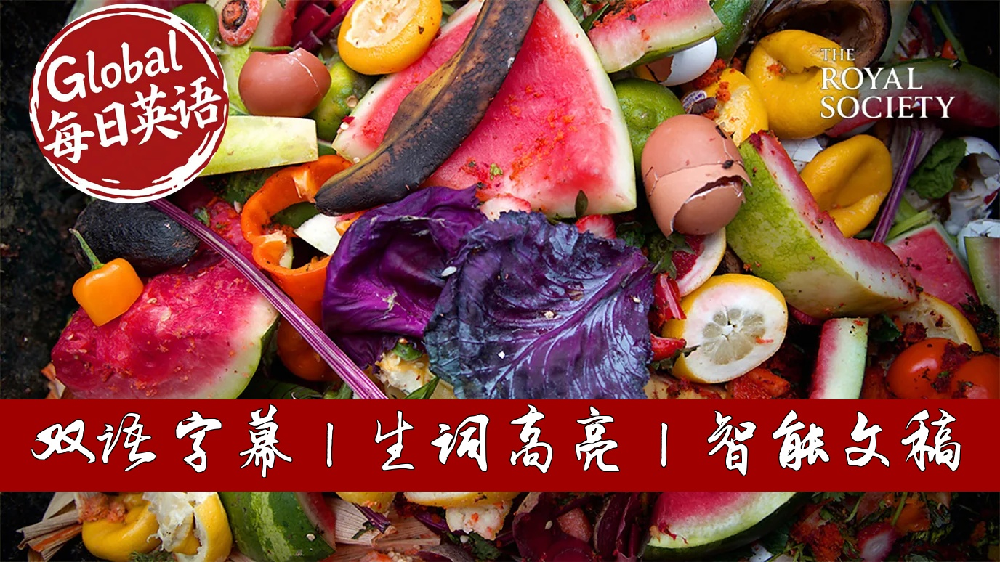

【BBC精选：全球每年生产的食物有三分之一被浪费掉】
Summary: Globally, one-third of all food produced is wasted daily, with significant economic and environmental consequences. In the UK alone, households discard millions of potatoes and bread slices daily, costing families £1000 annually. Food waste contributes massively to greenhouse gas emissions, ranking as the third largest emitter if it were a country. Solutions include better meal planning, understanding food labels, and proper storage. Technological innovations and local food systems are also crucial for long-term change.
摘要： 全球每年有三分之一的食物被浪费，造成严重的经济和环境后果。仅在英国，家庭每天就丢弃数百万个土豆和面包片，每年使每个家庭损失约1000英镑。食物浪费是温室气体的主要来源之一，其排放量堪比世界第三大经济体。减少浪费的方法包括合理规划饮食、正确理解食品标签和改善储存方式。科技手段和本地化食品系统也被视为解决这一问题的关键。

⏱️ Estimated Reading Time: 9 min.
📚 四级生词 📚 六级生词 📚 雅思生词 📚 托福生词 📚 专八生词 📚 SAT生词 📚 考研生词 📚 GRE生词
Have you ever thrown away a sprouty potato?
It might not seem like a big deal, but that's just one of the 2.9 million potatoes we throw away every day in the UK.
One third of the food produced globally every year goes to waste.
Imagine that you go to the supermarket and you get three bags of groceries.
One of those bags is going directly to waste.
Between our busy lives and sometimes just simply not knowing what to cook, throwing away old food seems inevitable at times, but wasting less food would benefit both the planet and our wallets.
Food waste has a massive economic impact with the average household of 4 people in the UK wasting around £1000 worth of food each year.
It can't be right in the world of the 21st century where 800 million people already struggled to get in our food.
That a third of the food produced is lost or wasted and so many people are going hungry.
And we can't ignore the impact on the environment.
It's been estimated that if food waste were a country
it would be the third largest greenhouse gas emitter after the US and China.
You might think that supermarkets with the main culprits here, throwing away unsolved products, but in fact only around 2% of the food waste in the UK happens in supermarkets.
The vast majority around 60% is in our homes.
Luckily there are lots of things we can do to reduce food waste at home.
I far the most wasted foods in our homes are fresh fruit and veg.
Planning meals can really help make sure that you're buying what you need and you're also thinking about how you can use up leftovers which can make a great lunch or a meal to put in the freezer for another day.
Understanding what the dates mean on our food packaging can make a big difference to how much food we waste.
The best before dates are the ones that tell you that you can rely on your senses to judge if whatever you are consuming is okay for you.
Whereas a used by date means that that food has to be used or frozen by that date.
Putting things in the right place can really help you use your food for longer, so storing apples and potatoes in the fridge.
For example you'll get three months longer to use them.
The only fruit and veg that don't belong in the fridge are onions,
bananas and whole fresh pineapple.
We chuck away around 25 million slices of bread every day in the UK from our homes and bread is best stored in the cupboard or on the side and not in the fridge and that means it'll stay fresh of longer.
But also you can freeze bread and use it straight from the freezer for toast.
If you've got a fridge with a temperature display it's worth checking that it's five degrees or lower.
Most people in the UK have fridges that are slightly too warm and what that means is that food doesn't last as long.
And we could learn a thing or two from ancient techniques.
Firmamentation allows us to turn yeast into beer and cabbage into kimchi.
Pickling can also preserve food by using salt, vinegar and sometimes sugar to stop the bacteria that spoil it from growing.
Whilst in richer countries like the UK there's a lot we can do to minimise food waste at home.
The situation is rather different in poorer countries where food is mainly wasted at the farming stage.
In India for example where 195 million people are undernourished, 67 million tonnes of food are wasted every year due to weather, lack of proper storage or pests.
There are some scientific developments that could help.
Bioactive packaging for example releases enzymes or antioxidants to change the surface of the food and increase its shelf life.
There's also GM or genetically modified feeds that have had their DNA altered to make them more nutritious or last longer.
Although there is still some skepticism about it.
A number of years ago there was new ways of treating bread so that sliced life could last for 60 days.
There was quite a lot of consumer skepticism because in some sense a loaf of bread that last 60 days something has happened to eat and it's no longer natural.
The more that you get to things that people feel nervous about the more likely it is that
a technology solution will not necessarily receive widespread acceptance by citizens and consumers.
Tim Benton believes the global food system as a whole needs looking at.
Our current food system is highly dysfunctional and we have developed it around the notion
that the world needs ever more food and we need to make it ever cheaper.
In many high income countries like the UK food is economically rational to waste
so our time is often more precious than the money that we have
so we buy food we shove it in the fridge you find a slimy bag let us weak later when we throw it away
if you respect food and you're less willing to throw it away then that is the big mind shift I think that is necessary.
Rather than importing food from across the planet avocados from Peru and chicken from Thailand Tim Arguise we need to grow more food locally.
I think there is an element that the more local you are the more it fosters respect for food
and therefore indirectly you're less likely to want to waste it
so you can imagine a world where we reset the food system and where waste is no longer an issue
we would save more biodiversity
we would reduce our greenhouse gases
we can reset the relationship between people and food
we can't tackle climate change if we don't fix the food system
and we need to treat food like the precious resource that it is.